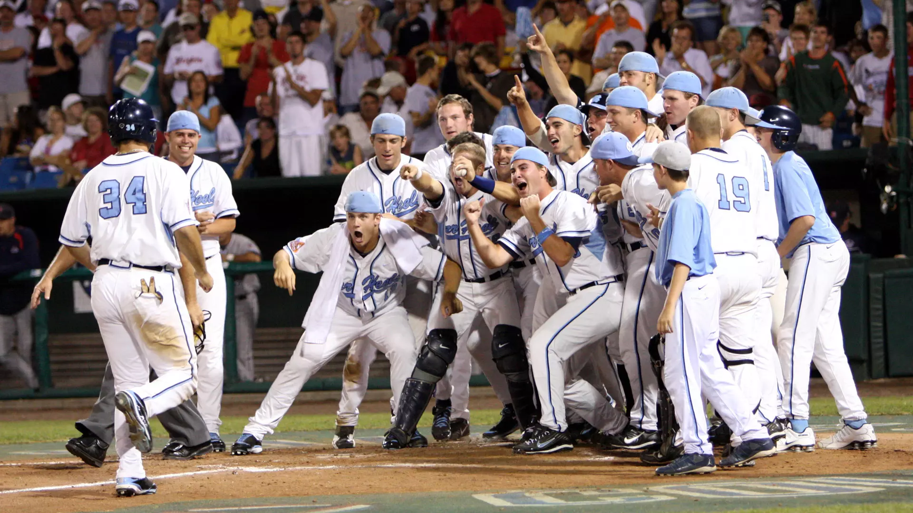
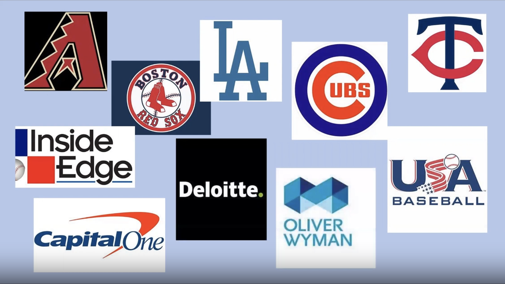

Resume

Preparing Players for Success
11 College World Series Appearances
8 ACC Tournament Championships
74 MLB Players Produced
27 All-Americans

Preparing You for Success
By working on our team, you can gain valuable skills that translate to real analyst jobs.
Past members have gone on to work for 6 different MLB teams and other baseball-related organizations, like USA Baseball.
Others have taken their talents outside of baseball to major companies, such as Capital One and Deloitte.